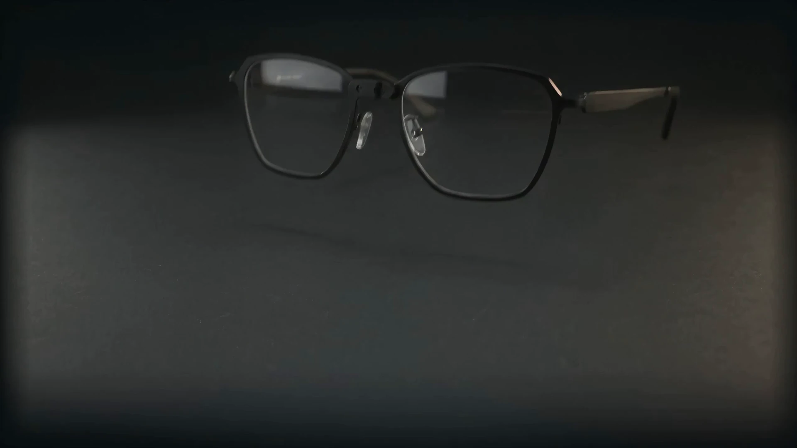

TERO OPTICS
See beyond
the ordinary.
Precision optics, light and support for the way you work.

THE HUMAN PERSPECTIVE
Leaning in
for a closer look.
On a standard stool and without loupes, the dentist bends the neck and rounds the back to see the working field.
A different way to see. A more considered way to work. Every detail begins with your perspective.
From the optics in front of you to the seat beneath you.
Discover the elements of the TERO collection.
Through the lens.

Light.
Where it matters.
White light, with a warmer perspective at a touch. Lower the amber cover and watch the beam shift to a soft, warm tone. Explore the amber-filter setting for composite work.
A clearer
understanding.
Which optical families can I explore?+
TERO optical families include ERGO HD, ERGO HD ZM, Galilean, Galilean HD and Prismatic.
How do I choose a magnification?+
Try the magnification comparison before discussing your fit and working distance with your supplier.
Is the interactive view an exact product model?+
The 3D scene is an illustrative design study based on TERO photography, not a dimensional engineering model. Refer to the original photographs for product details.
Where can I find the full specifications?+
Contact TERO for full specifications and available configurations.
Contact us.
Ask us about TERO loupes, lighting or seating, or get in touch to arrange a fitting.